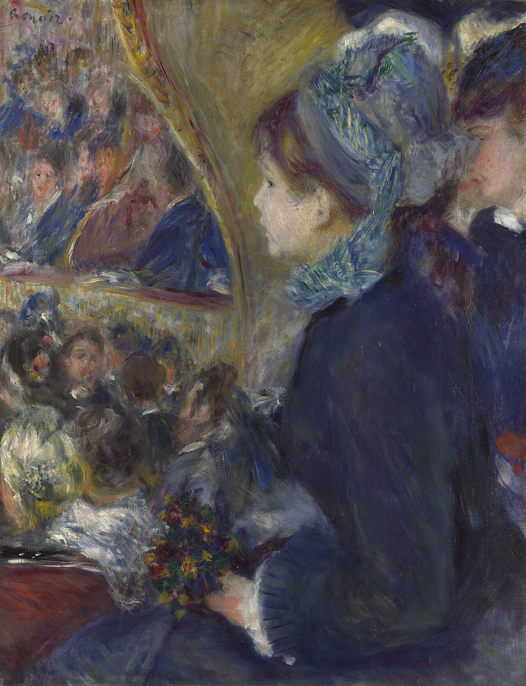

在剧院（初次出门） At the Theatre (La Première Sortie)
雷诺阿 · 1876–1877年 · 伦敦国家美术馆
Pierre-Auguste Renoir · 1876–7 · The National Gallery, London
图片：Wikimedia Commons，公有领域 / Image: Wikimedia Commons, public domain

发现 · Discover
坐在包厢里 Sitting in the box
我们好像和两位年轻女子一起，坐在剧院的包厢里。
We seem to be sitting in a theatre box with two young women.
看不见的脸 A face we can't see
离我们最近的女子身体前倾，蓝色的软帽转向另一边，我们看不到她的脸。
The nearest woman leans forward, her blue bonnet turned away from us. We cannot see her face.
被看的人 Being watched
楼座上的观众里，下层的一个男人和上层的一个女人，好像正朝这边看：看我们，还是看包厢里的她？
Among the audience, a man in the lower tier and a woman above him seem to be looking this way: at us, or at the young woman in the box?
看不到舞台 No stage
画里几乎看不到舞台，雷诺阿画的是观众，不是演出。
We can barely see the stage. Renoir painted the audience, not the performance.
不是他起的名字 Not his title
“初次出门”这个画名不是雷诺阿起的，是1923年在伦敦拍卖时才第一次使用的。所以，这幅画讲的不一定是“第一次出门”的故事。
Renoir did not give the painting the title “The First Outing”. It was first used at a London auction in 1923, so it may not tell that story at all.
三个包厢 Three theatre boxes
雷诺阿画过三幅剧院包厢，这是其中之一。另一幅《包厢》，就在伦敦考陶尔德美术馆。
Renoir painted three theatre boxes. This is one; another, La Loge, is in The Courtauld Gallery in London.
故事 · The story
ACT I 第一幕 · 剧院里的巴黎 Paris at the theatre
19世纪70年代，去剧院看戏、也看人，是巴黎很时髦的事。雷诺阿画过好几幅剧院包厢。
In the 1870s, going to the theatre to watch the play, and the people, was fashionable in Paris. Renoir painted several theatre boxes.
1876–1877年 · 伦敦国家美术馆 / 1876–7 · The National Gallery, London
ACT II 第二幕 · 看观众的画 A picture of the audience
这一幅里，舞台几乎看不见。雷诺阿画的是包厢里的年轻女子，和楼座上一层层的观众。
In this one, the stage is barely visible. Renoir painted a young woman in a box, and the tiers of spectators beyond.
1876–1877年 · 伦敦国家美术馆 / 1876–7 · The National Gallery, London
ACT III 第三幕 · 换过的名字 A changing title
它最早的主人在1899年拍卖时，叫它《咖啡音乐会》；1923年在伦敦拍卖时，它又被叫作《初次出门》。同一年，伦敦国家美术馆买下了它。
When its first owner sold it in 1899, it was called Café-Concert. At a London auction in 1923, it was called La Première Sortie, “The First Outing”. That same year, the National Gallery bought it.
1876–1877年 · 伦敦国家美术馆 / 1876–7 · The National Gallery, London
我们无法确定发生了什么。 We can't be sure what is going on.
作品档案 · Artwork record
| 画家（生卒年） · Artist (dates) | 皮埃尔-奥古斯特·雷诺阿（1841–1919） / Pierre-Auguste Renoir (1841–1919) |
|---|---|
| 画名 · Title | 在剧院（初次出门） / At the Theatre (La Première Sortie) |
| 年份 · Date | 1876–1877年 / 1876–7 |
| 材质 · Medium | 布面油画（未衬布） / Oil on canvas (unlined) |
| 尺寸 · Dimensions | 65 × 49.5 cm |
| 收藏地 · Collection | 伦敦国家美术馆 / The National Gallery, London |
| 来源说明 · Credit line | 1923年用考陶尔德基金购入（编号 NG3859） / Bought, Courtauld Fund, 1923 (NG3859) |
关于画家 · About the artist
皮埃尔-奥古斯特·雷诺阿（1841–1919），法国画家。他和莫奈在学画时就是好友，是印象派的核心人物之一。19世纪80年代，他开始离开印象派，转向古典艺术。
Pierre-Auguste Renoir (1841–1919) was a French painter. He and Monet became friends as students, and he was one of the leading Impressionists. In the 1880s he began to move away from Impressionism towards classical art.
更多雷诺阿的画 · More by Pierre-Auguste Renoir